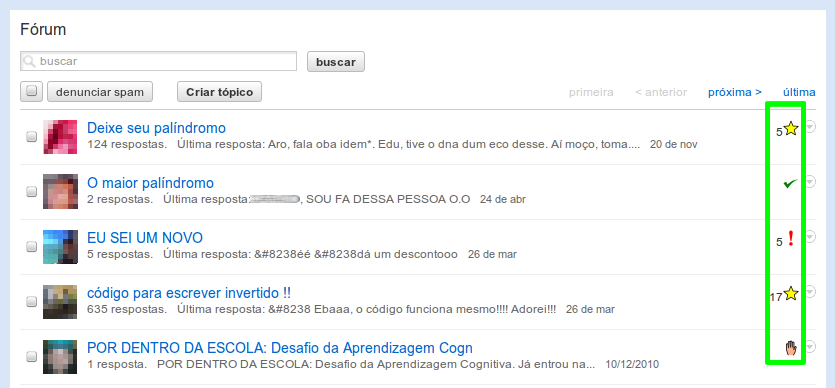
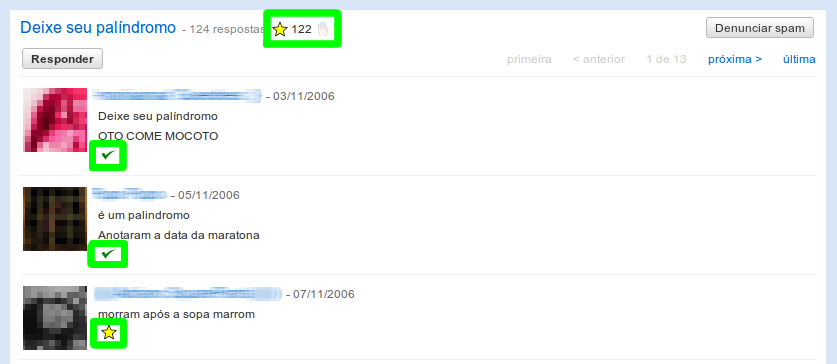

Exportar / Importar dados
Navegue nas comunidades do Orkut™ com ícones que ajudam a identificar a situação de leitura dos tópicos e suas mensagens.
O significado dos ícones estão explicados abaixo e uma descrição pode ser vista ao passar o mouse sobre um ícone quando estiver navegando no Orkut™.
Esta extensão funciona nas versões nova e antiga do Orkut™.
Consulte as limitações a que esta extensão está sujeita.
Na lista de tópicos, em cada tópico haverá um ícone que informará:
Nas páginas de mensagens de um tópico, haverá ícones na parte superior da página – ao lado do título do tópico – e em cada mensagem.
Na parte superior da página, há um indicador do número total de mensagens do tópico e poderá haver os seguintes ícones referentes ao tópico:
Em cada mensagem haverá um ícone de ação referente à mensagem:
O significado dos ícones estão explicados abaixo e uma descrição pode ser vista ao passar o mouse sobre um ícone quando estiver navegando no Orkut™.
Esta extensão funciona nas versões nova e antiga do Orkut™.
Consulte as limitações a que esta extensão está sujeita.
Lista de tópicos
Na lista de tópicos, em cada tópico haverá um ícone que informará:
 Não há mensagens novas no tópico.
Não há mensagens novas no tópico.- O tópico é novo / nenhuma mensagem foi lida.
 Há mensagens novas no tópico desde a última vez que foi lido.
O número ao lado do ícone indica quantas mensagens há para serem lidas.
Há mensagens novas no tópico desde a última vez que foi lido.
O número ao lado do ícone indica quantas mensagens há para serem lidas. O tópico está sendo ignorado.
O tópico está sendo ignorado.
Mensagens de um Tópico
Nas páginas de mensagens de um tópico, haverá ícones na parte superior da página – ao lado do título do tópico – e em cada mensagem.
Na parte superior da página, há um indicador do número total de mensagens do tópico e poderá haver os seguintes ícones referentes ao tópico:
- O tópico foi todo lido / não há mensagens novas.
- O tópico é novo / nenhuma mensagem foi lida.
- Há mensagens novas no tópico.
O número ao lado do ícone indica quantas mensagens existem para serem lidas.
- O tópico está sendo ignorado. Clique para deixar de ignorá-lo.
- Clique para ignorar o tópico.
Em cada mensagem haverá um ícone de ação referente à mensagem:
- A mensagem já foi lida. Clique para marcar o tópico como não-lido a partir dela
(a mensagem e todas as seguintes serão marcadas como não-lidas).
- Indica que a mensagem ainda não foi lida. Clique para marcar que o tópico foi lido até esta mensagem
(a mensagem e todas as anteriores serão marcadas como lidas).
Esta extensão adiciona novas funcionalidades ao Orkut™ usando informações contidas nas próprias páginas
do Orkut™ e, assim, está sujeita a situações como as listadas abaixo:
- A extensão faz o melhor esforço para usar as informações contidas nas páginas no Orkut™. Em algumas situações as informações não são suficientes, o que pode causar situações "estranhas" como exibir um número negativo de mensagens novas ou não destacar com uma estrela um tópico que tenha mensagens novas. (Estes dois casos podem acontecer em situações em que mensagens são removidas do tópico.)
- O Google™ pode fazer alterações nas páginas do Orkut™ a qualquer momento sem aviso prévio, o que pode fazer com que a extensão deixe de funcionar parcialmente ou totalmente.